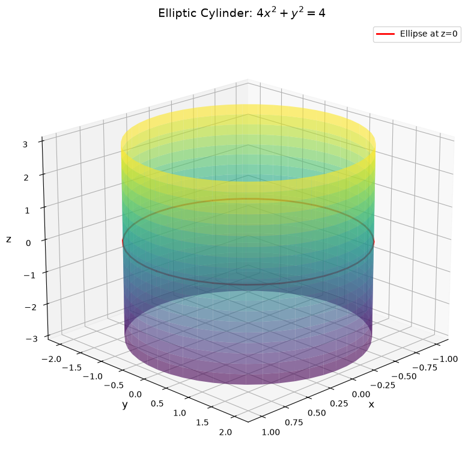
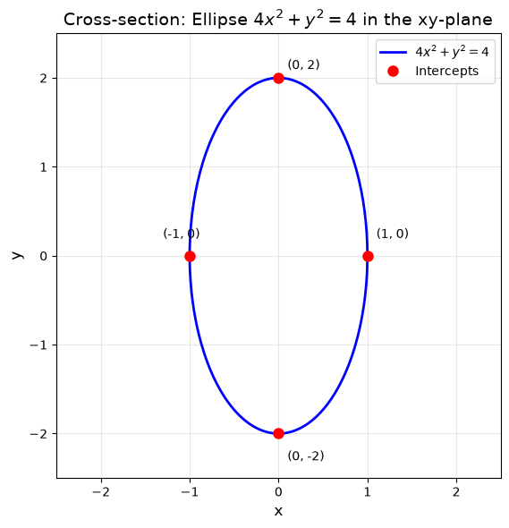
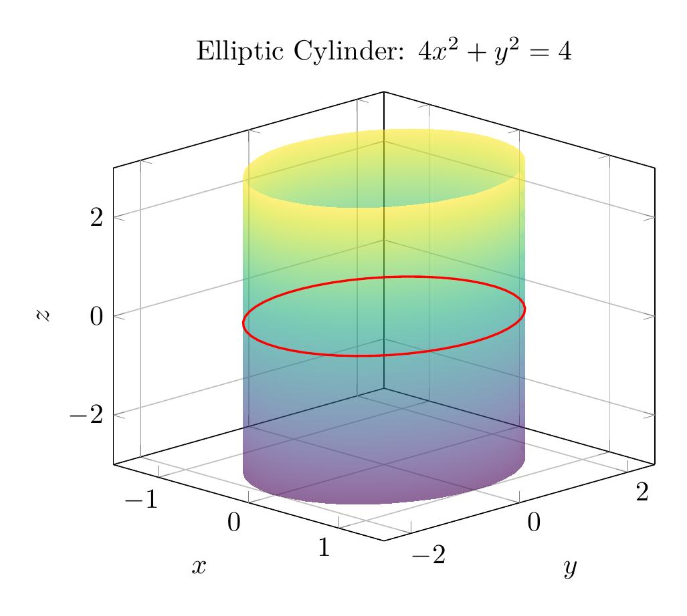
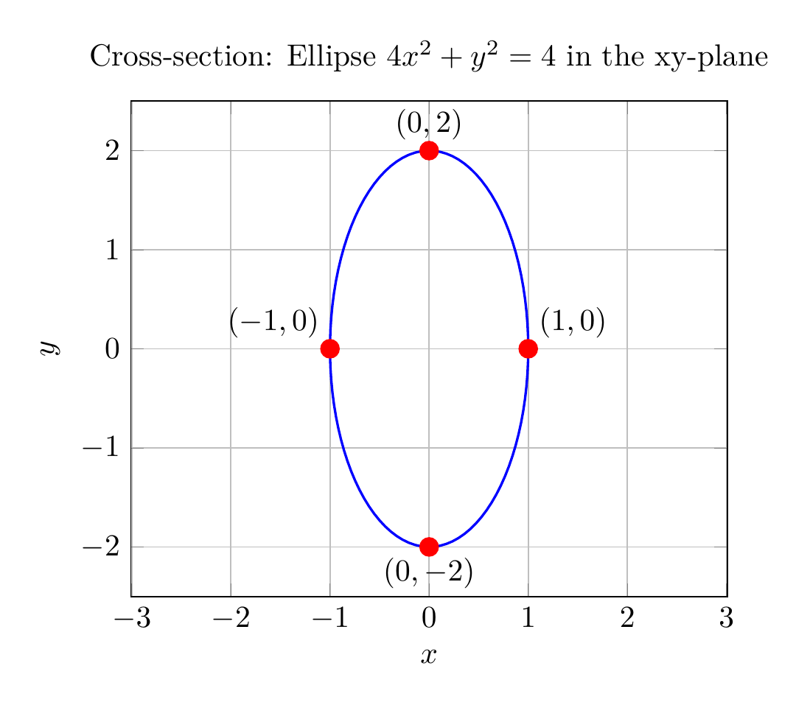

Path: mcma-Qwen3.5-397B-A17B/calculus-12.6.4/chat_20260823_213312_910343_utc_0800
Problem
Please solve the math problem in the image.

End of problem
Answer
# Solution: Describe and Sketch the Surface $4x^2 + y^2 = 4$
## Step 1: Analyze the Equation
The given equation is:
$$4x^2 + y^2 = 4$$
**Key Observation:** Notice that the variable $z$ does not appear in this equation. This is a crucial clue about the nature of the surface.
## Step 2: Identify the Cross-Section
In the $xy$-plane (or any plane $z = c$ where $c$ is constant), we can rewrite the equation in standard form:
$$\frac{x^2}{1} + \frac{y^2}{4} = 1$$
This is the equation of an **ellipse** with:
- Semi-major axis: $a = 2$ (along the $y$-axis)
- Semi-minor axis: $b = 1$ (along the $x$-axis)
- Center: $(0, 0)$
The intercepts are:
- $x$-intercepts: $(\pm 1, 0)$
- $y$-intercepts: $(0, \pm 2)$
## Step 3: Identify the Surface Type
Since the equation $4x^2 + y^2 = 4$ does not involve $z$, this means:
- For **any** value of $z$, the cross-section parallel to the $xy$-plane is the same ellipse
- The surface extends infinitely in both the positive and negative $z$-directions
This describes an **elliptic cylinder** with the $z$-axis as its central axis.
## Step 4: Classification
**Surface Type:** Elliptic Cylinder
**Standard Form:** $\frac{x^2}{a^2} + \frac{y^2}{b^2} = 1$ where $a = 1$ and $b = 2$
**Axis:** The cylinder's axis is the $z$-axis (the variable missing from the equation)
**Cross-sections:**
- Parallel to $xy$-plane: Ellipses $4x^2 + y^2 = 4$
- Parallel to $xz$-plane: Pairs of lines $x = \pm 1$
- Parallel to $yz$-plane: Pairs of lines $y = \pm 2$
## Summary
The surface $4x^2 + y^2 = 4$ is an **elliptic cylinder** that:
- Has elliptical cross-sections with semi-axes 1 and 2
- Extends infinitely along the $z$-axis
- Is centered on the $z$-axis
- Has the equation independent of $z$
$\boxed{\text{Elliptic Cylinder}}$
---


\documentclass[border=10pt]{standalone}
\usepackage{pgfplots}
\pgfplotsset{compat=1.18}
\usepgfplotslibrary{colormaps}
\begin{document}
\begin{tikzpicture}
\begin{axis}[
view={45}{20},
xlabel={$x$},
ylabel={$y$},
zlabel={$z$},
title={Elliptic Cylinder: $4x^2 + y^2 = 4$},
grid=major,
colormap/viridis,
zmin=-3, zmax=3,
xmin=-1.5, xmax=1.5,
ymin=-2.5, ymax=2.5,
]
% Plot the cylinder surface using parametric equations
\addplot3[
surf,
shader=interp,
opacity=0.6,
domain=0:360,
y domain=-3:3,
samples=40,
samples y=15,
]
({cos(x)}, {2*sin(x)}, {y});
% Add reference ellipse at z=0
\addplot3[
domain=0:360,
samples=50,
thick,
red,
]
({cos(x)}, {2*sin(x)}, 0);
\end{axis}
\end{tikzpicture}
\end{document}

\documentclass[border=10pt]{standalone}
\usepackage{pgfplots}
\pgfplotsset{compat=1.18}
\begin{document}
\begin{tikzpicture}
\begin{axis}[
xlabel={$x$},
ylabel={$y$},
title={Cross-section: Ellipse $4x^2 + y^2 = 4$ in the xy-plane},
axis equal,
grid=major,
xmin=-2.5, xmax=2.5,
ymin=-2.5, ymax=2.5,
]
% Plot the ellipse using parametric equations
\addplot[
domain=0:360,
samples=100,
thick,
blue,
]
({cos(x)}, {2*sin(x)});
% Mark the intercepts
\addplot[only marks, red, mark=*, mark size=3pt]
coordinates {(1,0) (-1,0) (0,2) (0,-2)};
% Add labels for intercepts
\node[anchor=south west] at (axis cs:1,0) {$(1, 0)$};
\node[anchor=south east] at (axis cs:-1,0) {$(-1, 0)$};
\node[anchor=south] at (axis cs:0,2) {$(0, 2)$};
\node[anchor=north] at (axis cs:0,-2) {$(0, -2)$};
\end{axis}
\end{tikzpicture}
\end{document}

End of answer